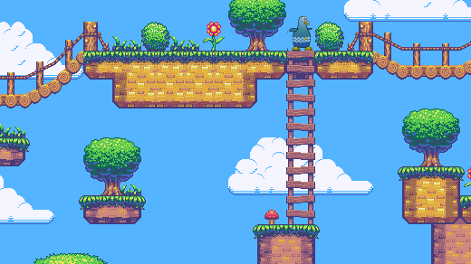
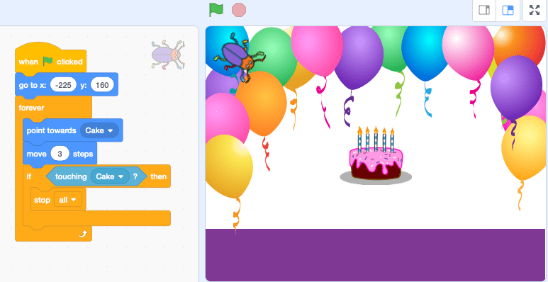
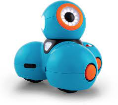
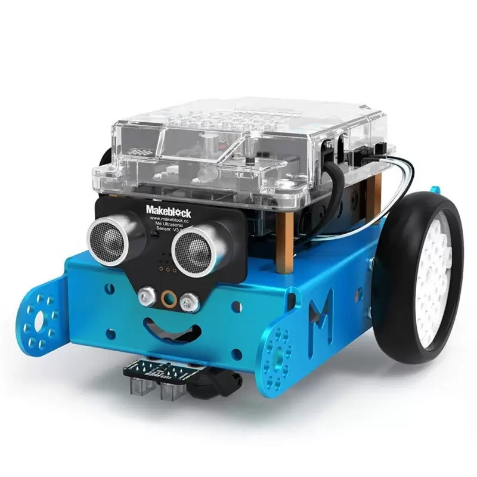

MY PERSONAL WEBSITE
Home
Shows
Projects

i made this game where the player can explore and get items.

I created a
Scratch
party so that they can have fun.

I learnt how to program the
Dash
robot to not
hit
any obstacle.

I coded the
mBot
to grab
objects
and
follow
the lines.